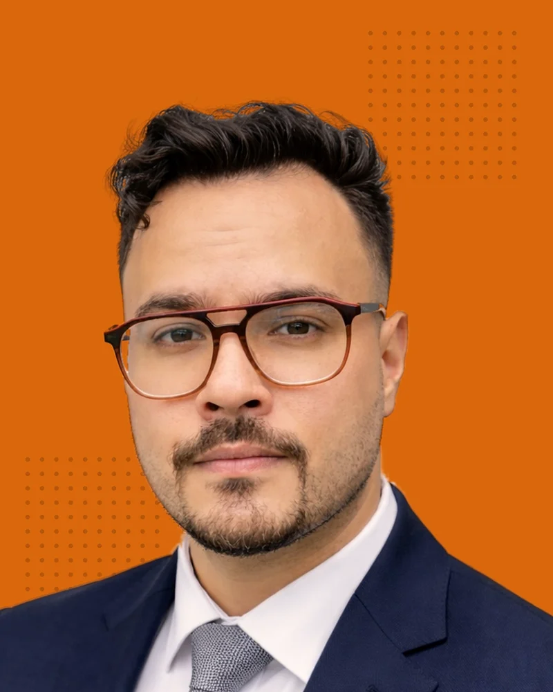

Estrategia, contenido y pauta digital con datos que se pueden comprobar.
↗ arrastra los stickers

José Rayos viene de la venta directa y la atención al cliente, donde aprendió que el marketing se mide en resultados: pedidos, entradas vendidas, gente que llega.
En 2021 cofundó Anayansi Burgers y fundó Utopía Sonora, una agencia de la escena electrónica en Panamá con más de 150 eventos apoyados desde marketing. Después llevó esa experiencia al marketing digital para empresas: SEO, GEO, Meta Ads y contenido para sectores como salud privada, educación, inmobiliario, firmas legales, turismo, hotelería, construcción y exportadores, entre otros.
Trabaja a diario con inteligencia artificial, principalmente con Claude, para investigar, redactar, diseñar piezas y automatizar procesos. Combina Claude Code y Python (vibecoding) para crear sus propias herramientas: un diagnóstico técnico de sitios web, automatizaciones de correo para prospección y este mismo portafolio.
Hoy publica Marketing con Datos en Panamá, un newsletter semanal en LinkedIn sobre marketing digital aplicado con cifras verificables.